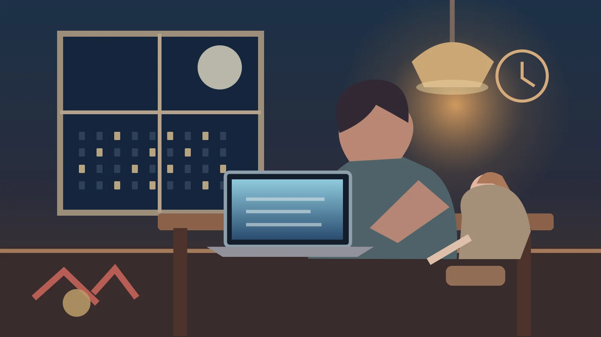

NYHETER / NORGE / ARBEIDSLIV
Foreldregenerasjonen som tar med seg jobben hjem
47,2 prosent av yrkesaktive småbarnsmødre opplever hver uke at jobben tar så mye tid eller energi at det går ut over privatlivet. Også mange fedre kjenner presset. En fersk SSB-analyse viser hvor ulikt hverdagen kan slå ut i familielivet.

Arbeidsdagen er ikke over når man henter i barnehagen. For mange småbarnsforeldre er det en ny arbeidsøkt som venter: mat, legging, rydding og planlegging av neste dag. Et presset arbeidsliv kan sette spor også etter at datamaskinen er lukket og arbeidstiden er slutt. Nye tall fra Statistisk sentralbyrå viser hvor utbredt opplevelsen er.
I SSBs levekårsundersøkelse om arbeidsmiljø for 2025 svarte 47,2 prosent av sysselsatte småbarnsmødre at jobben ukentlig tar så mye tid eller energi at det går ut over privatlivet. Blant småbarnsfedre var andelen 37,1 prosent. Begge andelene er høyere enn blant personer uten barn under 18 år av samme kjønn.
Kilder: SSB – Opplever foreldre oftere at jobben går utover privatlivet?, publisert 11. november 2026.
Tallene gjelder foreldre der yngste barn er mellom null og fem år, og beskriver en selvrapportert opplevelse. De betyr ikke at nær halvparten har en diagnose, en sykmelding eller at jobben er den eneste årsaken til en vanskelig hverdag. Likevel forteller de at konflikt mellom jobb og familieliv er en vanlig erfaring – særlig for mødre.
Kilder: SSB – Opplever foreldre oftere at jobben går utover privatlivet?, publisert 11. november 2026.
En forskjell mellom kvinner og menn
SSB finner at 40,1 prosent av sysselsatte kvinner og 32,9 prosent av sysselsatte menn samlet opplever slik belastning ukentlig. Småbarnsfamiliene har høyest andel innenfor begge kjønn. Forskjellen mellom småbarnsmødre og kvinner uten barn under 18 år er rundt ni prosentpoeng; tilsvarende forskjell blant menn er rundt 4,5 prosentpoeng.
Kilder: SSB – Opplever foreldre oftere at jobben går utover privatlivet?, publisert 11. november 2026.
Resultatet kan friste til en enkel konklusjon: At små barn gir mødre en helt annen arbeidsbelastning enn fedre. Men SSB understreker at mønsteret mellom familietyper ligner for kvinner og menn. Undersøkelsen måler erfaringer, ikke en direkte årsaksvirkning. Den skiller heller ikke alene ut betydningen av yrke, arbeidstid, omsorgsfordeling og andre forhold.
Kilder: SSB – Opplever foreldre oftere at jobben går utover privatlivet?, publisert 11. november 2026.
Når belastningen blir en del av hverdagen
Det er flere måter arbeid kan gripe inn i familietiden på. Noen opplever lange vakter og uforutsigbar arbeidstid. Andre er fysisk hjemme, men mentalt utslitt, slik at det blir vanskelig å være til stede. En tredje gruppe har fleksibilitet, men kjenner forventningen om alltid å kunne svare. Undersøkelsen viser at problemet finnes; den forteller ikke hvilken enkelt løsning som passer alle.
Kilder: SSB – Opplever foreldre oftere at jobben går utover privatlivet?, publisert 11. november 2026.
SSB opplyser også at flere småbarnsforeldre er psykisk utmattet etter arbeid. Dette er et særskilt spørsmål i undersøkelsen og skal ikke blandes sammen med målet på jobbens innvirkning på privatlivet. Når vi diskuterer familiepolitikk, bør begge deler undersøkes: Hvordan foreldre har det etter jobb, og hvor mye av familiens tid jobben faktisk krever.
Kilder: SSB – Opplever foreldre oftere at jobben går utover privatlivet?, publisert 11. november 2026.
Debatten kan handle om fleksible arbeidstider, bemanning, fordeling av omsorgsarbeid og hvordan arbeidsgivere møter ansatte med små barn. Men tiltak må vurderes ut fra forskjellige yrkesgrupper og familiers behov. Det viktigste funnet er kanskje at jobb–hjem-konflikten ikke bare tilhører et fåtall familier med spesielt krevende hverdager. Den er en erfaring som angår store deler av arbeidslivet.
Kilder og dokumentasjon
Denne teksten er basert på tilgjengelige dokumenter og redaktørstyrt dekning. Selvstendige intervjuer, hovedbilde, sekundærbilde ved behov og redaksjonell publiseringskontroll gjenstår.